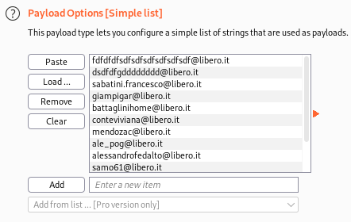
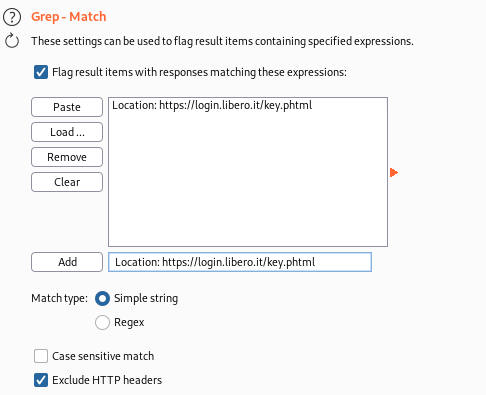

BurpSuite Intruder Sniper
To see the different options that we have with Burpsuite
Intruder →
HERE
(
Sniper, Battering Ram, Pitchfork, Cluster Bomb)
For validating
usernames/emails we need the Sniper option of Burpsuite Intruder
example: on
https://login.libero.it/1.
Send a valid and an invalid email and intercept them with Burpsuite.
2. Send a request (valid or invalid) to Burpsuite Intruder(Sniper)
Intruder → Payloads: Add all the potentials emails that you have found(see chapter
email
stuffing)
3. Now we have
different option depending on which is the response from the server
•
Time
Based Attack. We can identify valid and invalid user when the Server respond immediately when there is a wrong
username and instead take more time(processing server time) when the user is valid.
•
Grep a word or a phrase from response from the Server that identify only
valid or invalid accounts
Intruder → options: Add a word or a phrase that we found in the response when the
email is correct.
▪ Exclude or Include the header depending on where is the phrase that we want t match
 We will appear a new column with the
word or phrase that we added. The box near the response will be checked if the word/phrase is in the
response
4. Start the Attack